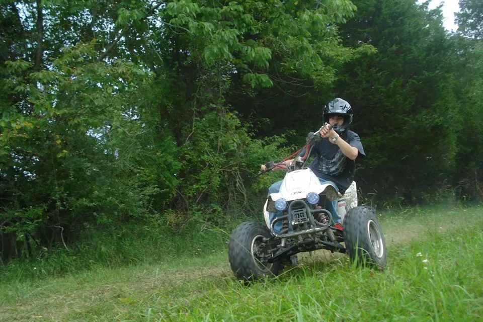
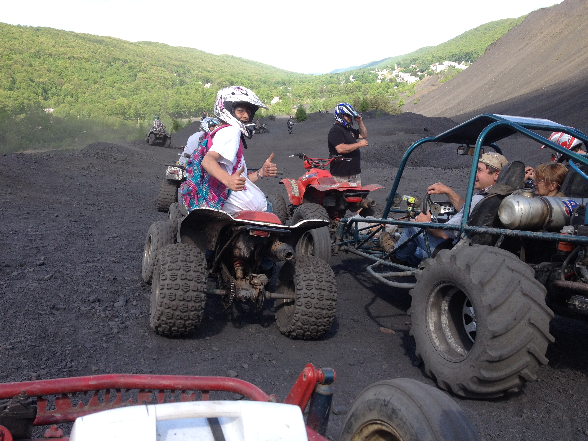
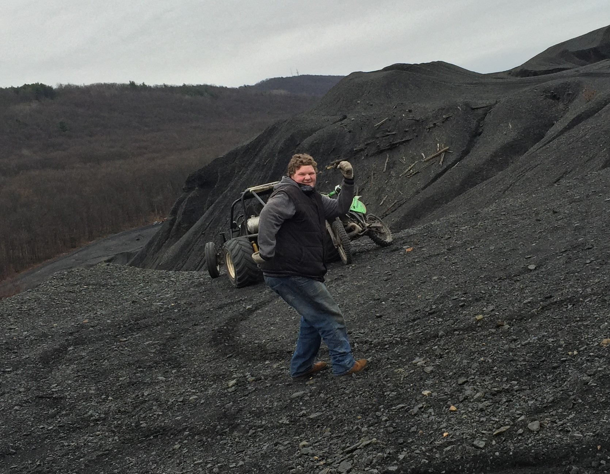
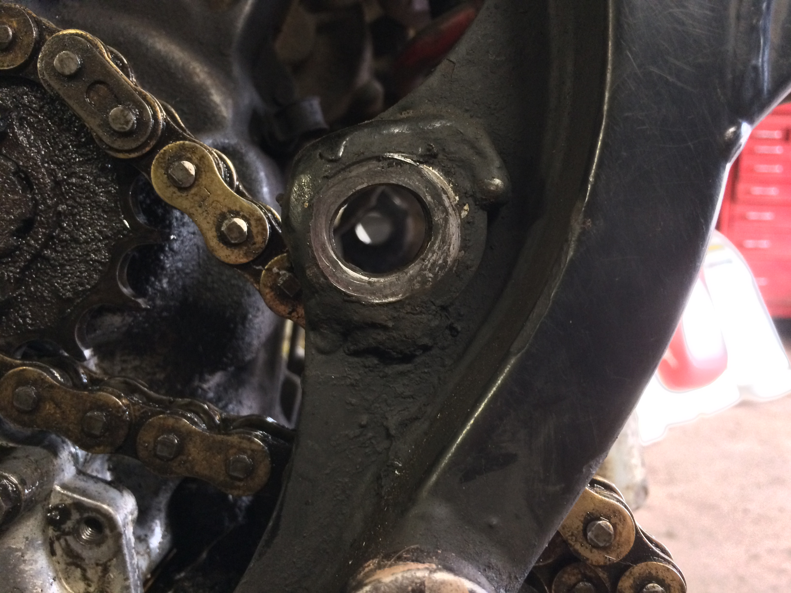
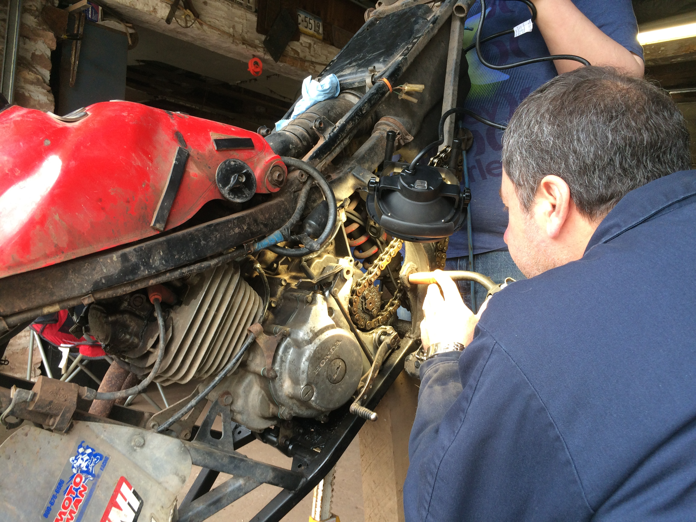
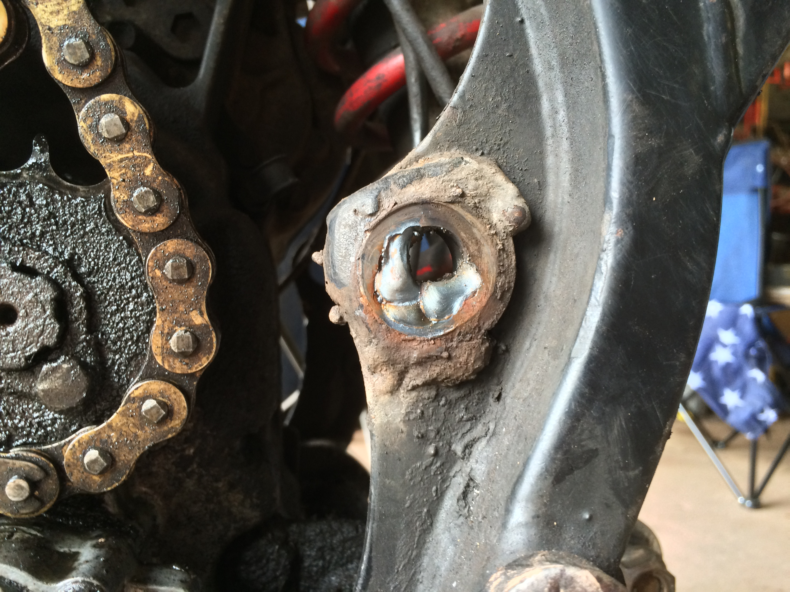

1987 Honda TRX250X Fourtrax
My Honda 250 Fourtrax is an ATV that I bought from my friend in June of 2014. This thing needed absolutely no work done to it, until of course I got a hold of it. While riding it Memorial Day weekend 2014, before I had bought if from him, I was climbing a few smaller hills. These hills had a few of what we call "whoop dee do's", which are essentially just really large smooth speed bumps. Climbing these hills with speed was bouncing the ATV all over the place, but I kept on it. Eventually it bounced enough for the swing arm pivot bolt to lose its nut. Luckily, it failed while I was at home putting it back into the garage. This also caused the chain to jump off of the drive sprocket, and dig itself into the case cover.
 After we fixed the case cover, I used it mostly to mess around at the farm. Right around the time we fixed it, I bought my dune buggy, which distracted me from the ATV, and the buggy went on most of the trips afterwards.

In October 2015, my friend Colin and I took our ATV's to Trevorton for the day. We rode to the coal hills and gave them a shot, but later in the day, the chain jumped off of the front sprocket again, and the chain dug itself into the engine case... again.
After all of that, the ATV spent months sitting in the garage because I had bought my '98 KTM 250 SX. I slowly got around to fixing the crack in the case, but once that was dealt with, we noticed some serious play in the chain. I suspected it was bad swing arm bearings, but we didn't get around to looking at it. Around this time, Nate was in the market for an off-road toy. This resulted in me selling the ATV to him.
Immediately after he bought it, we tore the whole swing arm off of it, only to find the pivot bolt hole in a very bad way. It seemed that the pivot bolt had rattled back and forth enough to make the hole an oval. We ended up filling 3/4 of the hole with weld, and began using a circular file to round out the hole just big enough for the pivot bolt. We put it all back together and the play was no more!
  